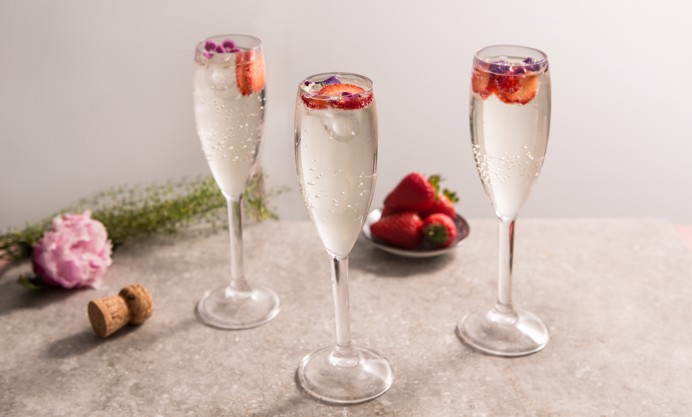

Elderflower Prosecco Cocktail

Description
A floral cocktail perfect for Easter
Elderflower has become a mainstream ingredient that can be added with some citrus flavors
Ingredients
- 1/2 lemon, juiced
- 1/2 lime, juiced
- 30ml of gin
- Prosecco
- Elderflower cordial
ice
Steps
- Fill a glass or a wine glass with ice. Add the lemon and lime juice, the gin, then a good splash of elderflower cordial
- Fill the rest of the glass with Prosecco then have a taste (you want about 2/3 Prosecco to 2/3 everything else)
- You might need to add more elderflower if it's too tart for you. I like to keep frozen berries in the freezer which make a stellar garnish for this - especially strawberries